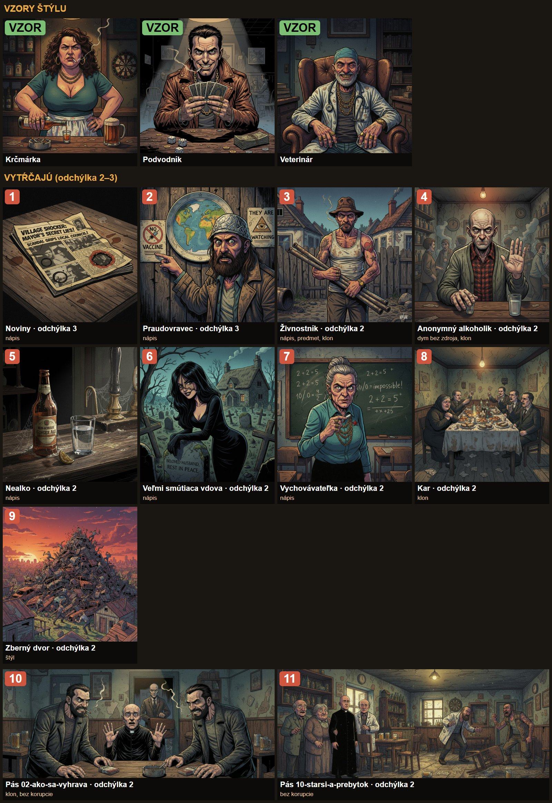

Kontrola štýlu ilustrácií 20261027-1725
Verdikt: Opravy po kontrole z 24. 10. zabrali: Dlh, Cirhóza a Absťák sú teraz kreslené scény bez textu, Autobusár je okato skorumpovaný, pás Bitka už nemá klon a nočné lokality stratili pastelové ružové nebo. Hra teda drží štýl lepšie ako pred tromi dňami (11 vytŕčajúcich obrázkov namiesto 23).
Ostali však presne tie nálezy, na ktoré sa pri oprave nesiahlo: čitateľné anglické nápisy (Noviny, Praudovravec, Vdova, Vychovávateľka, Nealko, Finančná poradkyňa), dym bez zdroja na Anonymnom alkoholikovi, klony (pás 02, Kar) a Starešinovia bez korupcie (pás 02 a 10, slabo Starosta). Najviac vytŕčajú Noviny, Praudovravec a Zberný dvor.
Väčšinu nálezov stačí doladiť (vyretušovať text, podpis či dym), prerobiť treba len Noviny a Zberný dvor. Chýbajúcich ilustrácií je 19, všetko nové karty v7, na ktorých práve pracuje naex-admin.
Nálezy
| Obrázok | Meno | Skupina | Odchýlka | Predtým | Pravidlá | Čo vytŕča | Odporúčanie |
|---|
Koláž: vytŕčajúce obrázky vedľa vzorov

Chýba ilustrácia (19)
- Vidly
- Lievik
- Krokodíl
- Kapybara
- Kôň
- Kohút
- Degustátorka
- Bzdocha
- Dohadzovačka
- Vandal
- Strýko z Ameriky
- Mäsiar
- Kulturista
- Traktoristka
- Vymáhač
- Sklad
- Poľovnícka chata
- Predsedova vila
- Herňa
Hraničné prípady a otázky pre Michala
- Vychovávateľka a „2+2=5“. Vtip stojí na rovniciach na tabuli. Majú ostať ako výnimka z pravidla bez nápisov (a zmazať len anglické „impossible!“), alebo celá tabuľa na čmáranice?
- Vlajka EÚ na Moste. Je to skutočný symbol, ale satira dotácií bez nej stráca pointu. Nechať?
- Podpisy v rohu (Starosta, Zámočník, Živnostník, Kočovník): ilustrácia ide na kartu celá, takže sú vidieť. Stačí ich vyretušovať, netreba generovať. Zámočník a Kočovník sú vzory štýlu, tak ich model môže preberať aj do nových kariet.
- Nové lokality ako skupina (Obecný úrad, Jednota, Kultúrny dom, Družstvo, Cintorín, Vínna pivnica, Most) majú rovnakú nočnú šablónu a čistejšiu linku. Medzi sebou ladia, len sú hladšie než postavy. Nechávam ich na 1.
- Zdroj. Obrázky som stiahol z verejného
/api/sada(verzia 24, 82 kariet) a/media/…bez prihlásenia. Všetkých 63 je bajtovo zhodných sopackages/server/seed/karty/<id>.jpgna master b1c1ea3.